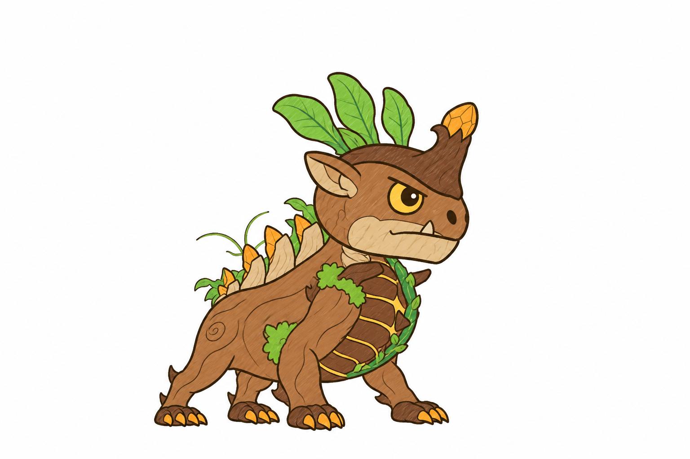
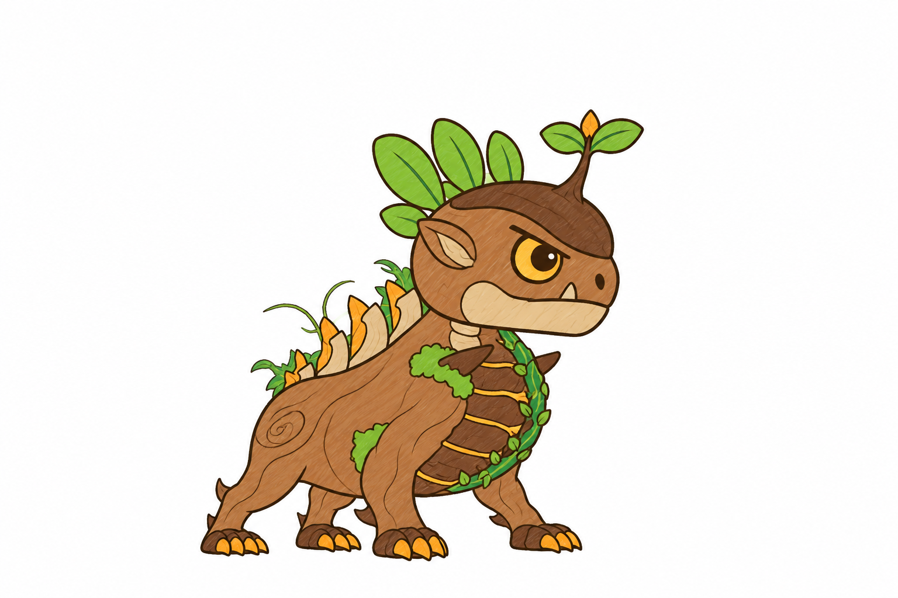
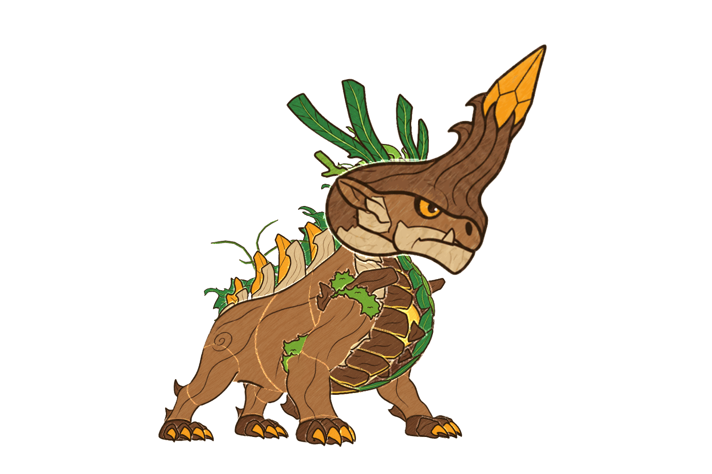
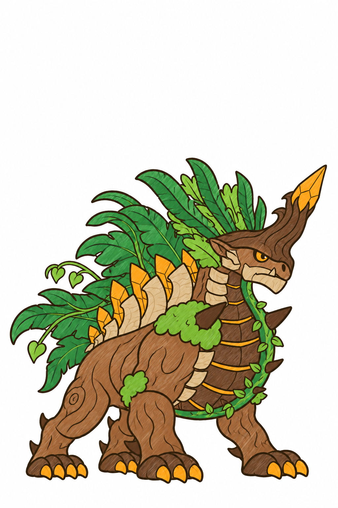
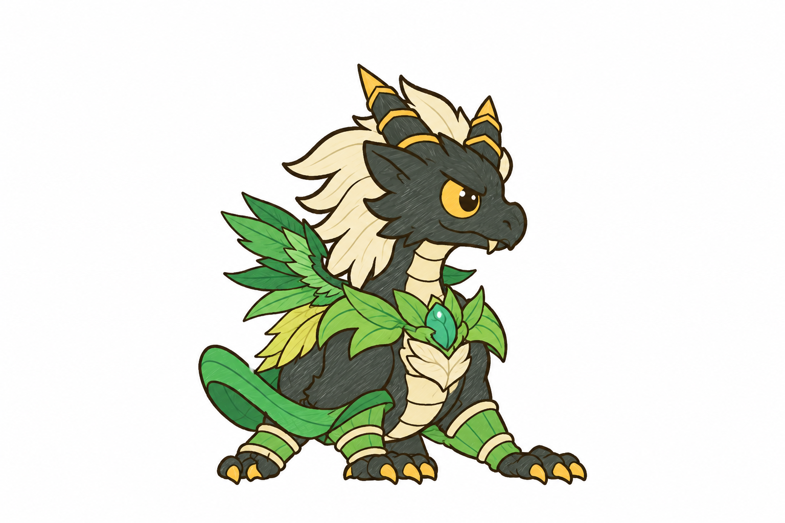
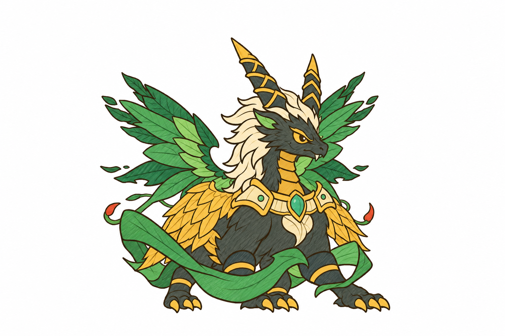
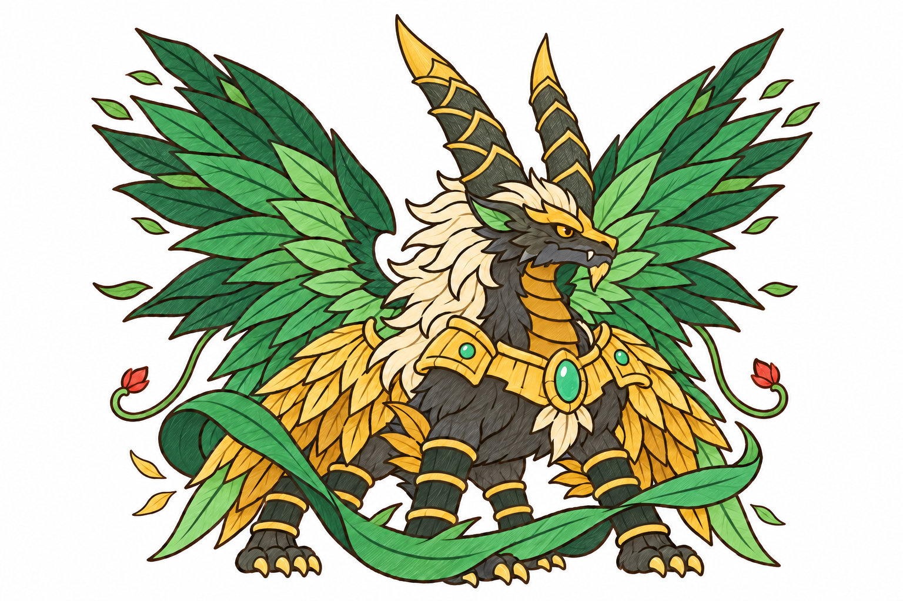
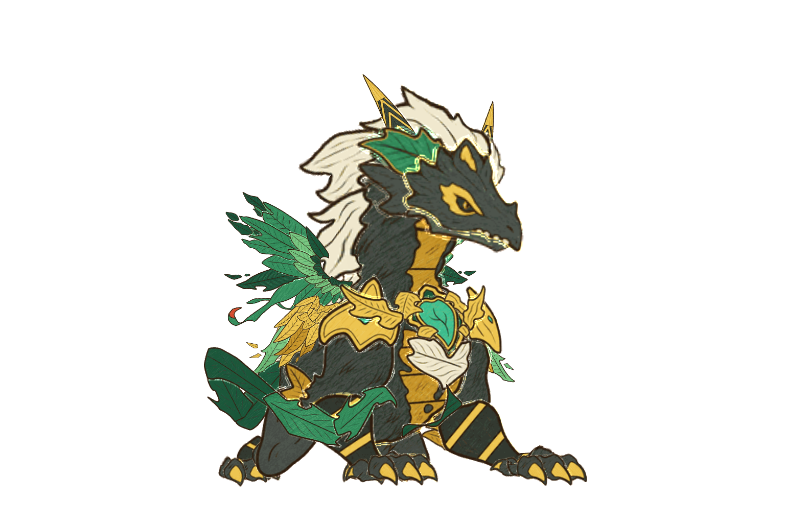
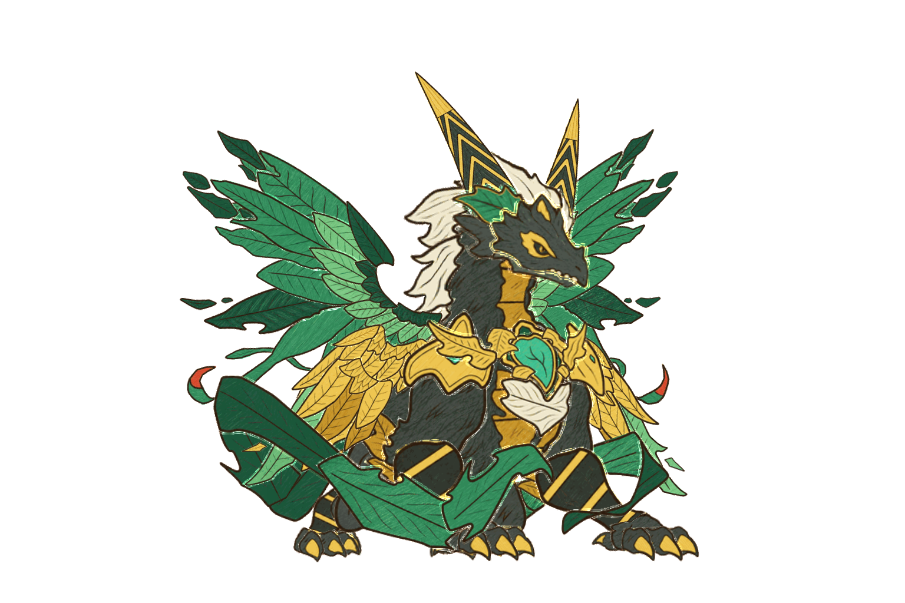

Concept dạng non: suất 9 (Giác Mộc) và suất 10 (Thanh Long)
Mỗi concept vẽ đè lên bố cục dựng từ rig thật (cùng xương, lưới, clip của dạng lớn, chỉ đổi tỉ lệ), nên dáng và chỗ các mảnh trùng bố cục.
Bạn chọn hướng (hoặc dặn sửa) rồi mình làm mảnh, rig, clip.
Suất 9: Giác Mộc, dạng non (chọn một)

A Nụ sừng : sừng gỗ ngắn mập như dạng lớn, chóp nụ hổ phách.
B Mầm cây : chưa có sừng, trán mọc mầm hai lá có nụ hổ phách.

Bố cục: rig dạng lớn đổi tỉ lệ (đầu 1,5, thân 0,85, chân 0,8, lá lưng 0,5) 
Dạng lớn đã duyệt (Giác Mộc)
Suất 10: Thanh Long, dạng 1 và dạng 2 (dạng 3 là boss đang có)

1 Rồng con : sừng mầm măng, cánh lá nhỏ xíu, chưa có giáp vàng (bẹ măng non ôm vai, nụ ngọc).
2 Rồng thiếu niên : sừng măng 60 %, cánh 2/3, giáp tre ngà viền vàng mảnh.
3 Boss đã duyệt (rồng trúc bốn cánh)

Bố cục dạng 1 (đầu 1,6, sừng 0,3, cánh 0,35, đuôi 0,5) 
Bố cục dạng 2 (đầu 1,2, sừng 0,6, cánh 0,65, đuôi 0,8)